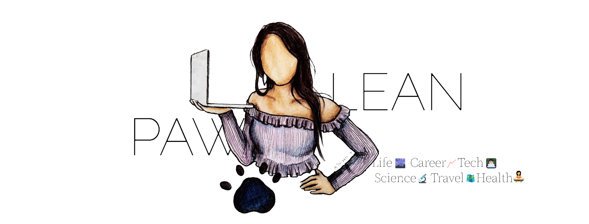

✏️ Creator
13 years ago, I started writing on the web.
My blog has evolved over time, I mostly now write about reflections of my experiences for both my self development journey (personal and professional growth) as well as daily adventures in life.
Examples of the topics I cover include monthly reflections, equality in STEM, self-care, and communicating science simply.
A full list of topics can be found here.I have also written science-focused blogs on Science Brainwaves and on entrepreneurship and university life on the University of Sheffield Enterprise.

Art by Teecaake to represent Pawlean online
Working on my blog has allowed me to develop knowledge, experience and skills including:
‣ An understanding how to effectively communicate on different digital channels
‣ An understanding on SEO to drive more leads (possible partnerships with companies)
‣ Analysing data from Google Analytics to identify key trends in order to improve and maximise the performance of content. My blog gets an average of 1,647 vistors per month (from current 2018 stats.)
‣ Collaborating with brands, individuals and companies on exciting projects
VIDEO PROJECTS
 Pressing For Progress
Pressing For Progress #CodeWithConfidence
#CodeWithConfidence MLH Hackathons
MLH HackathonsI have also started branching out into YouTube and have worked with different people on communicating messages across to my auidence.